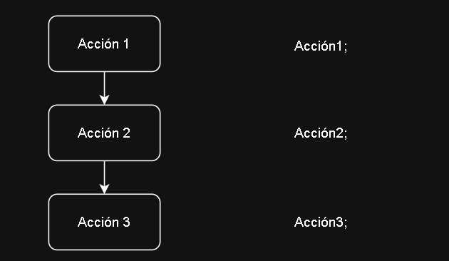
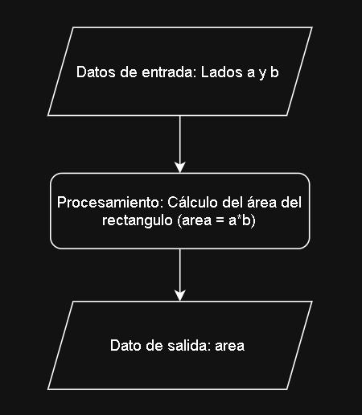
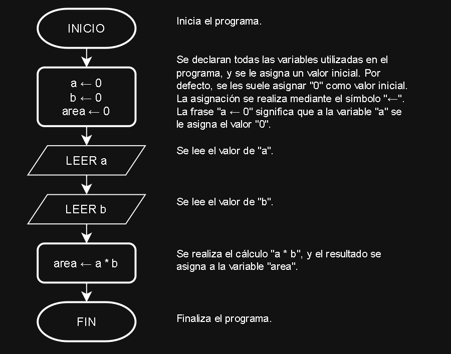

Las estructuras secuenciales son aquellas en las que una acción (instrucción) sigue a otra en una secuencia. En una estructuras secuencial, una acción no se realiza hasta que se haya completado la anterior. En general, las tareas se suceden de tal modo que la salida de una es la entrada de la siguiente, y así sucesivamente hasta el final del proceso.
A continuación, se muestra el diagrama de flujo y su sintaxis en C de una estructura secuencial:

Para comprender como se realiza la aplicación de esta estructura para resolver problemas, se muestra a continuación un ejemplo:
Ejemplo: Se desea realizar un algoritmo que permita calcular el área de un rectángulo a partir de sus lados a y b. Los valores de los lados del rectángulo se deben ingresar por teclado, y el resultado se debe imprimir en pantalla. Realizar el diagrama de flujo y programa en C del algoritmo.
Solución: A continuación, se muestra un esquema donde se ilustran los datos de entrada, el procesamiento de los datos, y los datos de salida del algoritmo:

El algoritmo deberá, en primera instancia, declarar todas las variables que se van a utilizar (a, b y área). Luego, deberá leer los datos de entrada, realizar los cálculos necesarios, y escribir el resultado. El drigrama de flujo del algoritmo es el siguiente:

C.
1 #include <stdio.h> /*Añade la librería "std input-output" que contiene operaciones de entrada/salida tales como "scanf" y "printf"*/
2 int main() /*"main" es la función principal, donde está alojado el programa principal, cuya entrada es nula ("void") y su salida es un enetero "int".*/
3 {
4 float a=0, b=0, area=0; /*Declara las variables en coma flotante "a", "b" y "area", y les asigna el valor de "0"*/
5 scanf("%f",&a); /*Ingrese un número por teclado y lo lmacena en la variable "a".*/
6 scanf("%f",&b); /*Ingrese un número por teclado y lo almacena en la variable "b".*/
7 area=a*b; /*Realiza el cálculo "a * b" y el resultado lo almacena en la variable "area"*/
8 printf("%f",area); /*Imprime en pantalla el valor almacena la variable "area".*/
9 return 0; /*Devuelve un "0" como resultado de la función principal "main". Esto indica que el programa se ejecuto correctamente*/
10 }C del algoritmo.Todo el texto en gris entre los símbolos /* y */ son comentarios. No son parte del programa, y hacen una descripción de lo que realiza cada instrucción. Son muy útiles para no olvidar la estructura lógica del algoritmo.
Es preciso tener en cuenta la sintaxis del programa anterior, tales como los ; al final de cada sentencia, las llaves { y } que indican el principio y fin del programa principal, los paréntesis ( )y que indican el principio y fin de los argumentos en las funciones, y las comas , que separan los argumentos, entre otras reglas.
Es muy importante respectar todass estas reglas de sintaxis del lenguaje C, sino el programa no se compilará y no se podrá ejecutar.
C del algoritmo. P y el área A de un círculo de radio R se calculan: R1 y R2. Los valores de las resistencias se deben ingresar por teclado, y el resultado de la resistencia equivalente se debe imprimir en pantalla. Dibujar el diagrama de flujo y escribir el programa en C del algoritmo. Ayuda:
Recordar que la resistencia equivalente de dos resistencias en paralelo se calcula mediante la expresión:
C del algoritmo. Ayuda:
Para declarar variables enteras se puede utilizar la siguiente instrucción:
int a; /* Declara la variable entera "a". */
C del algoritmo.
Ayuda 1: Recordar que la hipotenusa h de un triángulo rectángulo con catetos a y b se calculan:
$$ h = \sqrt{a^2 + b^2} $$
Ayuda 2:
En C se pueden calcular potencias y raíces cuadradas con las funciones pow() y sqrt(), que se encuentra en la librería math.h. Esta librería se puede incluir agregando, al inicio del programa, la instrucción:
#include<math.h>
Ayuda 3:
En el siguiente ejemplo se ilustra como se calculan cuadrados utilizando la instrucción pow():
cuadrado = pow(numero, 2); /*Esta instrucción calcula el cuadrado del valor dentro de la variable `numero`, y el resultado lo almacena en la variable `cuadrado`. */
Ayuda 4:
En el siguiente ejemplo se ilustra como se calculan raíces cuadradas utilizando la instrucción sqrt():
raiz = sqrt(numero); /*Esta instrucción calcula la raíz cuadrada del valor dentro de la variable "numero", y el resultado lo almacena en la variable "rai". */
C del algoritmo.
Ayuda:
Para declarar una variable char que almacene una cadena de caraacteres, se puede utilizar la siguiente instrucción:
char nombre[20]; /*Esta instrucción declara la variable "nombre" con espacio para 20 caracteres */